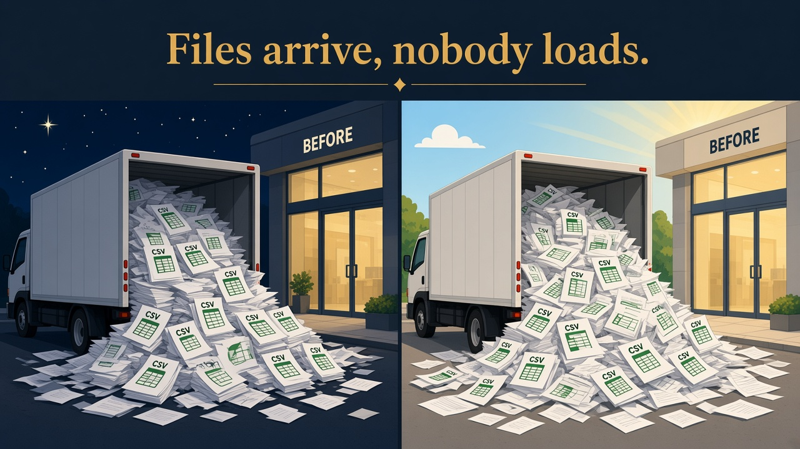
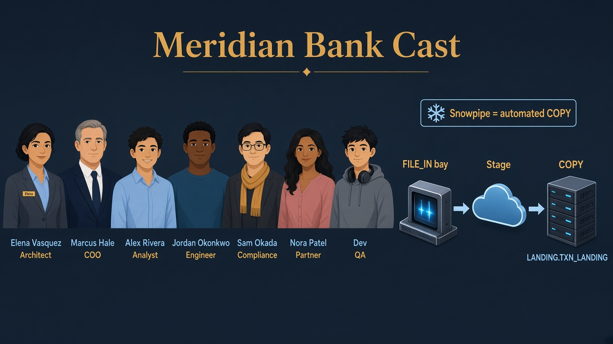

Lab 06 · Thursday night · You are Elena · Jordan’s overnight files
Files arrive overnight — automate the dock
Read every Teach first section before you run SQL.
You will build the same pattern Jordan needs for partner CSV drops: stage → file format → COPY INTO → BRONZE_LANDING.
Snowpipe is the story of automated COPY — this lab does not walk fake AWS wiring.
Business problem
Morning desk finds CSV drops with no loader. Jordan begs for a repeatable pattern before Nora’s partner feed scales up.
Sam wants an audit trail: who loaded what, when.
Solution you will build
Internal stage in schema FILE_IN, a CSV file format, manual COPY INTO BRONZE_LANDING.TXN_LANDING.
In production Elena would attach Snowpipe — same COPY semantics, triggered when files land on the stage.

Before
Files arrive overnight — chaos, no repeatable dock.

After
Stage + file format + COPY — pallets to BRONZE_LANDING.
Episode 06 · Truck at night
Files pause in the bay first
JordanEngineer — builds pipelines
CSV landed. Can I dump it straight into gold for Alex?
ElenaArchitect — explains why
No. Truck bay first (FILE_IN stage) → then load dock (BRONZE_LANDING). Gold is a finished product. Snowpipe = bay door that opens when a truck arrives.
See it — don’t memorize definitions
Files pause on the stage first — never jump straight into a table.
Stage
FILE_IN truck bay
Internal stage — @ in SQL, bank-owned parking.
txn_day1.csv.gz on stage not on ledger yet
File format
CSV rules once
Headers, quotes — reuse every load.
TYPE = CSV SKIP_HEADER = 1
Load
COPY INTO table
Forklift bay → BRONZE_LANDING.TXN_LANDING.
ON_ERROR = ABORT_STATEMENT bad row stops load
Production
Snowpipe
Same COPY — triggered when file lands.
manual COPY (lab) → auto sensor (prod)
Picture · Night truck bay
FILE_IN stage + COPY into BRONZE_LANDING; Snowpipe = automated COPY when the truck arrives.
The whole flow in one picture
Four objects. Files never jump straight into BRONZE_LANDING — they pause on the stage first.
1 · Filetxn_day1.csv.gzPartner drop (simulated in lab)
3 · LoaderCOPY INTO tableParse CSV → typed columns
4 · TableBRONZE_LANDING.TXN_LANDINGQueryable rows for downstream jobs
Snowpipe (interview one-liner):
“We’d define a pipe with the same stage, file format, and target table.
Snowflake watches the stage and runs COPY when files arrive — Jordan doesn’t click Run at 3 a.m.”
Thursday night · loading dock
Jordan: “Can we stop drag-and-drop in Snowsight?”
Elena: “Stage is the bay, file format is how we read commas, COPY is the loader.
Snowpipe is COPY on autopilot — I’ll prove the manual path first so Sam can audit loads in history.”
1
Set session + open FILE_IN
Step 1 · coach
What is FILE_IN?
AlexAnalyst — still learning
Is FILE_IN the staging layer? Like silver?
ElenaArchitect — explains why
No — it’s the file room: stage + file format objects. Medallion staging in dbt is different. Here “stage” means Snowflake’s parking spot for files.
Two meanings of “stage” — file parking vs dbt folder. Ask which one.
What this does
Elena’s lab badge, cheap warehouse, bank database. FILE_IN is the schema where inbound file objects live (stage + format).
Why Elena does it
Keeps file plumbing separate from BRONZE_LANDING tables Jordan already owns.
SQL · context
USE ROLE ROLE_BANK_LAB_ADMIN;
USE WAREHOUSE WH_BANK_XS;
USE DATABASE MERIDIAN_BANK;
CREATE SCHEMA IF NOT EXISTS FILE_IN;
USE SCHEMA FILE_IN;
✓ Snowsight shows schema FILE_IN under MERIDIAN_BANK
2
Define how to read CSV
Step 2 · coach
Why a file format?
JordanEngineer — builds pipelines
Can’t COPY guess CSV?
ElenaArchitect — explains why
Tell Snowflake how commas and headers work. File format = reading glasses for the file.
What this does
Creates FF_CSV_SIMPLE: CSV type, optional double-quote wrapping, no header row in our tiny lab file.
SQL · file format
CREATE OR REPLACE FILE FORMAT FF_CSV_SIMPLE
TYPE = CSV
FIELD_OPTIONALLY_ENCLOSED_BY = '"'
SKIP_HEADER = 0;
Internal stage = parking inside Snowflake’s lot (fine for labs). Prod often uses external stages to your cloud bucket with storage integrations.
What this does
STG_TXN_INTERNAL defaults to the file format above so every file in the bay parses the same way.
SQL · stage
CREATE OR REPLACE STAGE STG_TXN_INTERNAL
FILE_FORMAT = FF_CSV_SIMPLE;
✓ Stages list shows STG_TXN_INTERNAL (internal, not S3 URL)
4
Create the BRONZE_LANDING table
Step 4 · coach
Why a bronze table before the file?
AlexAnalyst — still learning
Can’t we invent columns while loading?
ElenaArchitect — explains why
Dock shelf first — named columns waiting. Then COPY pours file rows into that shape. Empty table ≠ empty story; it’s the landing pad.
What this does
Target table with typed columns — COPY will map file fields into these slots.
SQL · BRONZE_LANDING.TXN_LANDING
CREATE OR REPLACE TABLE BRONZE_LANDING.TXN_LANDING (
TXN_ID NUMBER,
CLIENT_ID NUMBER,
STATUS STRING,
AMOUNT NUMBER(12,2)
);
✓ Empty table BRONZE_LANDING.TXN_LANDING — 0 rows until COPY
5
Park a “partner file” on the stage
Step 5 · coach
Fake a file for the lab
JordanEngineer — builds pipelines
We don’t have a real partner drop…
ElenaArchitect — explains why
We put bytes on the stage to simulate a truck. Same idea: file appears in the bay, then we load the dock.
What this does
In production Jordan would PUT a file from a laptop or sync from cloud storage.
Here we COPY INTO @stage/…from inline VALUES — same result: a gzip CSV named txn_day1.csv.gz on the stage.
SQL · simulate file on stage
COPY INTO @STG_TXN_INTERNAL/txn_day1.csv.gz FROM (
SELECT * FROM VALUES
(2001, 1, 'POSTED', 10.00),
(2002, 2, 'POSTED', 20.00),
(2003, 3, 'SETTLED', 30.00)
) OVERWRITE = TRUE SINGLE = TRUE;
✓ LIST @STG_TXN_INTERNAL; shows txn_day1.csv.gz
6
COPY from stage into BRONZE_LANDING
Step 6 · coach
COPY INTO bronze
MarcusCOO — business pressure
When is Alex allowed to use this data?
ElenaArchitect — explains why
After it’s in bronze and then cleaned toward silver/gold. COPY lands raw. It does not mean “board ready.”
What this does
Reads matching files from the stage, parses with FF_CSV_SIMPLE, inserts into TXN_LANDING.
PATTERN picks our file; ON_ERROR = 'ABORT_STATEMENT' fails the load if parsing breaks.
What you should see
COPY result columns: file name, rows loaded, errors (0).
SQL · load into table
COPY INTO BRONZE_LANDING.TXN_LANDING
FROM @STG_TXN_INTERNAL
FILE_FORMAT = (FORMAT_NAME = 'FILE_IN.FF_CSV_SIMPLE')
PATTERN = '.*txn_day1.csv.gz'
ON_ERROR = 'ABORT_STATEMENT';
✓ Status LOADED · 3 rows parsed
7
Verify + interview close
Step 7 · coach
How do I know it worked?
AlexAnalyst — still learning
COPY said success — I’m done?
ElenaArchitect — explains why
SELECT a few rows from bronze. Interview close: stage → COPY → bronze. Snowpipe is the same path with an automatic door.
What you should see
Three txn ids 2001–2003 with amounts 10, 20, 30. Sam can later use load history / query history for audit.
SQL · proof
SELECT * FROM BRONZE_LANDING.TXN_LANDING ORDER BY TXN_ID;
SELECT 'Lab 06 BRONZE_LANDING COPY OK' AS status;
✓ n = 3 · status row confirms lab script parity with sql/06_BRONZE_LANDING_copy.sql
Interviewer presses further — say these out loud
Basics got you into the room. Cover each answer before you open it.
If you blank here, an Architect + dbt interviewer will know.
Q1. COPY vs Snowpipe vs external tables — when is pipe wrong?
Say: Snowpipe for continuous FILE_IN landings. Batch COPY for controlled backfills. External tables for query-in-place exploration, not Meridian’s Bronze dock of record. Pipe without file format/error handling just automates garbage.
Q2. What fails if FILE_IN stage grants are wide open to FR_ANALYST?
Say: Analysts can LIST/GET raw files with PII before policies exist — stage is another vault. Stage privileges stay with load roles; Alex reads SILVER/GOLD. Share publishes views, not stage URLs.
Q3. Snowpipe “exactly once” — what still duplicates in BRONZE_LANDING?
Say: Redelivered files with new names, or COPY without idempotent discipline, insert again. Pipe dedupes same-file metadata; it doesn’t make your business key unique. Downstream MERGE/dedupe (Lab 02) still matters.
Q4. Trial vs prod loading — what do you refuse to call “done”?
Say: Hardcoded keys in worksheets, public buckets, ACCOUNTADMIN as pipe owner. Prod: storage integrations, least-privilege pipe owner, error notification. Trial user-stage demos are teaching aids — say the gap out loud.
Q5. Why land in BRONZE_LANDING instead of COPY straight to GOLD_MART?
Say: You lose replay, as-landed audit, and the ability to rebuild Silver when rules change. Gold is a product; Bronze is evidence. Skipping Bronze for “speed” puts Finance on brittle extracts.
Elena’s wrap-up (say this out loud)
“Meridian’s overnight files needed a truck bay and a loader. I used schema FILE_IN for the internal stage and CSV file format,
parked txn_day1.csv.gz on @STG_TXN_INTERNAL, and COPY INTO BRONZE_LANDING.TXN_LANDING with abort-on-error.
Snowpipe is the same COPY path triggered when files land — not different semantics.
Outcome: Jordan has a repeatable BRONZE_LANDING pattern; Sam gets auditable loads; no manual spreadsheet imports.”